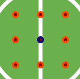
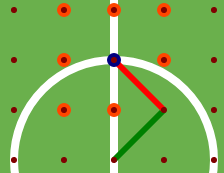
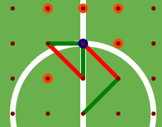

Witaj w grze JOINPOINTS. Czy pamietasz piłkarzyki, w które grało sie na kartce w szkole? Za chwilę zagrasz w internetową wersję tej gry. Najpierw jednak zapoznaj sie z zasadami.
1. Niebieski punkt wskazuje położenie piłki. Kolorem pomarańczowym oznaczone są punkty, do których możesz podać.
2. By wybrać jeden z punktów trzeba kliknąć na niego lewym przyciskiem myszy. Pierwszy ruch należy do Ciebie.
3. Po Twoim ruchu następuje ruch komputera. Zieloną linią oznaczone są Twoje ruchy a czerwoną komputera.
4. Jeżeli kilkniesz na punkt, który już wcześniej był wybrany, przysługuje Ci kolejny ruch. Analigicznie jest w przypadku ruchów komputera.
5. Zielonym kolorem oznaczona jest bramka, której bronisz. Natomiast czerwona to ta, którą atakujesz.
6. Wygrywasz jeżeli piłka znajdzie się na jednym z 3 punktów czerwonej linii. Cieszyć się z wygranej będziesz również jeżeli komputerowi zabraknie ruchów.
7. Gorycz poraszki odczujesz jeżeli piłka znajdzie się na jednym z 3 punktów zielonej linii lub jeżeli nie będziesz miał gdzie podać piłki.